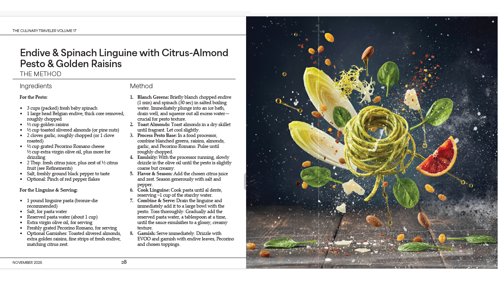

31 published titles precede the present program.
Publishing began with general nonfiction: books developed across subjects, disciplines, and markets under a number of distinct pseudonymous editorial identities.
The catalog now consists of 31 published titles, including 10 titles that reached Top 10 positions in their respective Ingram categories. What began as individual books gradually became a more deliberate practice of series, monographs, field records, and research-driven publications.
The 31 published titles represent the work of three authors working across multiple pseudonymous publishing identities. The pseudonyms distinguish editorial voices and areas of authorship; they do not represent separate authors.

The publication can be read whole.
The record is not limited to individual books. P1Lab has also produced complete magazine-form editorial work: researched, written, designed, edited, and prepared as a finished publication.
The complete publication is available for direct examination rather than represented through excerpts or promotional samples.
View the complete publicationThe work crosses disciplines without becoming diffuse.
Research, editorial judgment, technical development, and production are treated as parts of the same publishing practice.
The subject changes. The underlying discipline does not: investigate the material, establish the record, understand the structure, and produce something durable enough to be examined independently.
Research
Primary-source investigation, archival work, field observation, technical literature, historical context, and comparative study.
Editorial
The organization of complex material into coherent publications with a defined scope, vocabulary, structure, and point of view.
Technical
Programming, image systems, digital production, prepress conditioning, media processing, and tools developed around the requirements of the work.
Production
Book architecture, publication design, image preparation, manufacturing specifications, digital distribution, and finished physical objects.
Publishing and technology, in parallel.
I began working in publishing approximately 40 years ago. About three years later, I entered technology and programming. These were not successive phases of a career; they developed alongside one another.
The technical work has included programming and systems development involving media, signal processing, image systems, technical documentation, and production tools.
The public GitHub archive represents an inspectable, contemporary portion of that technical work. It does not encompass the full history.
View the technical archiveFlorida Hügelkultur.
Passive Sub-Surface Hydrological Retention & Soil Taxonomy for Sub-Tropical Landscape Infrastructures
Scheduled for publication in January 2027, this technical monograph examines the adaptation of hügelkultur to the environmental conditions of South Florida.
Its scope includes subsurface moisture retention, regional soil and biomass characteristics, landscape geometry, drainage and regulatory constraints, field construction, subtropical planting systems, and long-term maintenance.
The book develops a practical framework spanning residential landscapes, estate properties, and larger agricultural applications.
The record remains open.
The published bibliography and technical archive provide two views of P1Lab's work. Neither is intended to function as a résumé.
They are working records: available for inspection by people who need to understand what P1Lab actually does.
A serious record should be available to serious readers.
P1Lab works with organizations, institutions, and specialized operators whose work warrants serious documentation, research, or publication.
Contact P1Lab